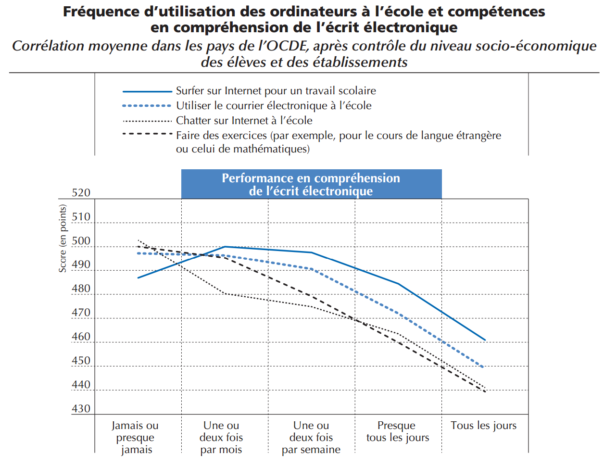

La question des tablettes à l’école est un débat imbriqué dans un autre débat plus
vaste : celui de l’utilisation du numérique en milieu scolaire. La rapidité du
développement des nouvelles technologies, ainsi que la complexité d’évaluer les
performances d’un système éducatif font qu’il est encore difficile de savoir précisément
si le numérique a un impact positif sur les élèves. Toutefois, en 2015, dans le cadre du
fameux programme PISA, une vaste étude a été menée par l’OCDE dans de nombreux
pays afin de mesurer l’impact des pratiques numériques à l’école, en évaluant les
compétences des élèves en lecture et en mathématiques en environnement numérique.
Si ces résultats doivent bien sûr être pris avec beaucoup de précautions, il est très
intéressant de s’y attarder car ils permettent de prendre un peu de recul sur ce débat, en
apparence simple.
Aussi surprenant que celui passe paraître, les résultats de ce rapport ne sont pas
à la hauteur des attentes placées dans les nouvelles technologies. En effet, en comparant
les résultats de ces pays, on constate que plus les élèves utilisent le numérique en milieu
scolaire, moins bons sont leurs performances.
Ainsi, des pays comme le Japon ou la Corée ont d’excellents résultats en
compétences numériques alors que les nouvelles technologies ne sont pas utilisées dans
un cadre pédagogique. De la même façon, dans des pays comme l’Espagne ou le
Portugal, le numérique est très présent à l’école mais les résultats ne sont pas au rendez-vous.
Il existe toutefois des exceptions, comme le Danemark ou l’Australie, qui
ont réussi à allier des très bons résultats avec une forte pratique du numérique depuis
plusieurs années déjà. C’est pourquoi le rapport suggère que le problème viendrait
d’une introduction trop hâtive des nouvelles technologies à l’école, comme cela a
justement été le cas en Espagne et au Portugal. Selon cette étude, équiper les élèves ne
peut suffire à améliorer leurs résultats. Avant toute chose, il faut réfléchir attentivement
aux contenus et aux outils pédagogiques qui doivent accompagner une telle réforme.
Ceci passe notamment par une véritable formation des professeurs au numérique.